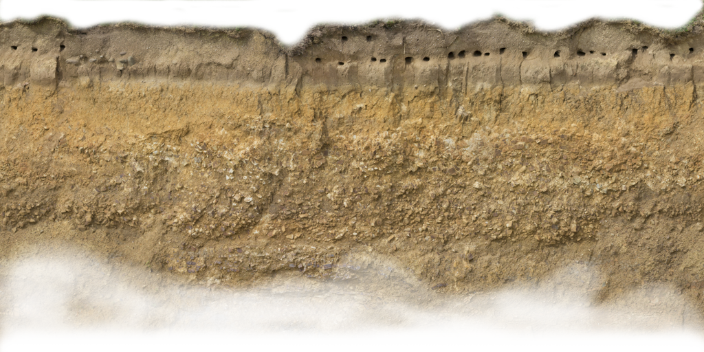
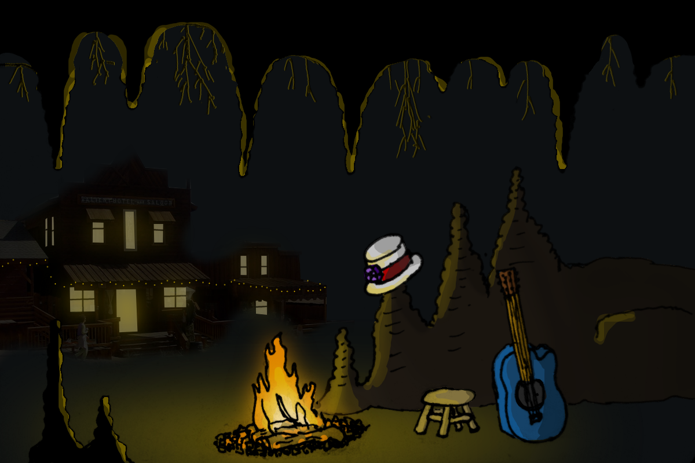
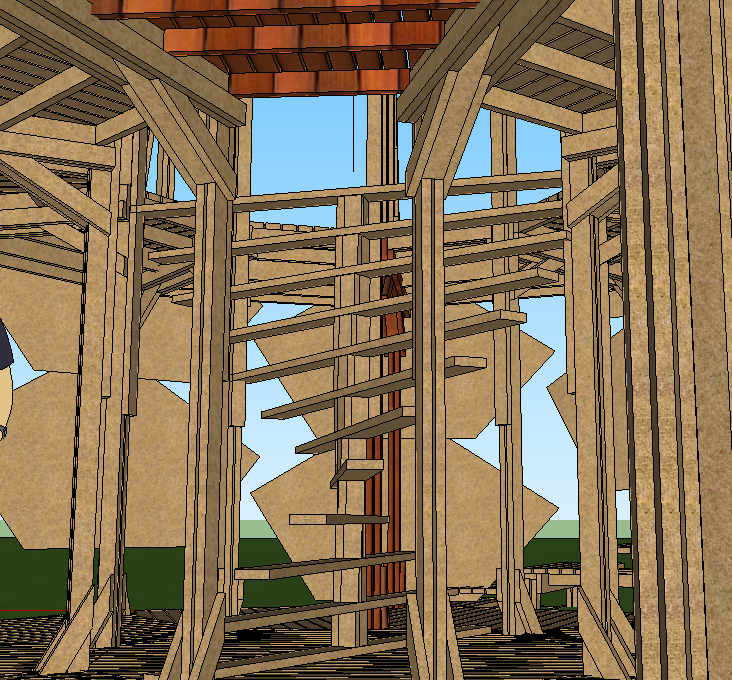

PINE Cononagon
Misty Nickle206-853-1847
MistyNickle@gmail.com

Transportation - The design is made to flat pack, so space in the usual 3 moving trucks should be fine. It is also designed out of lots and lots of boards, which means it will be lots of moving weight, so many hands for loadout will be imperative.
Burn - During the event, the pine cone nubs will be closed. When the effigy burns, they will start to open up, showing the glow of the fire inside. The spiral staircase and other elements of the siding & walls are designed to aerate the fire up around in one direction, encouraging a small interior fire tornado.
Burn-Ban - If we’ve got to take it apart for a Burn-ban, we’ll have had ample opportunity to understand how to do so. We’ll check the forecast before the event and ask for volunteers strictly to assist in the case of a Burn-ban, since many of the main DaFT crew will be exhausted.
Cleanup - Similar to the Burn-ban, since many of the main DaFT crew will be exhausted, we will put a special call-out for cleanup volunteers to assist after the event is over.
Budget - See Below...
Materials - See Below...
Rentals - The usual VR, Cherry Picker, & trencher should do.
Other Considerations - The usual VR, Cherry Picker, & trencher should do.
Community involvement: This was the greatest impetus of my joining DaFT and the greatest thing I hope to empower in others. There will be a lot of little details that so many in this community have to offer and you can be that we will be putting out a lot of callouts for new DaFT blood.
Finished by Friday at Flipside: Last year’s build opened Thursday night and this design is intended to follow along the same timeline. There may be small additions after we open, but nothing that should get in the way of people enjoying the effigy.
Test Build: The plan is for level 1 & level 2 to just fit in the warehouse as a whole piece. The 3rd level is smaller and should fit next to the effigy for a dry run just before we start tearing down in the last week of May.
Experiences = Connection: The mythos of the Phoenix from the ashes is an incredibly human concept & desire. Further, the fact that participants can go inside & interact with the piece as well as each other will create beautiful memories to cherish long after what the piece looked like remains… What it felt like is what will be remembered and loved.
Possessing a consumable aspect: It will be mostly made of wood, but there may be little surprises that are made of metal for people to take with them as a token. Regardless, leave no trace is paramount.
Community Ownership: Any materials not burned with the effigy, such as LEDs, electrical, propane, & other components are that of the Flipside community and will be shared for future DaFT or LLC-approved pieces.


Model is incomplete, missing strength.


Description
Brief
This three-story effigy is based off of the pine cone - nature’s true Phoenix rising from the ashes. The pine cone has adapted to its harsh environment by encasing its cone scales in a resin, which melts during fires and releases its seed from within to germinate among the ashes. Both the exterior & interior designs will play with themes of light, dark, mortality, immortality, & the strength we gain through hardship whether we choose that path or not. During the burn, the pine cone scales will pop open early, indicating their seed release & display the glowing fire. After the pine cone burns, amongst the ashes, a small metal sapling will be revealed.The participant story
This year, we are attempting to lead participants through something like a story by having a very clear entrance which winds its way through scenes before reaching a soft end. The story starts off with a set of stairs that wrap around the piece and lead into an entrance at the back. The back entrance empties the adventurer onto the second floor, where a wide tree trunk sits at the middle of the room, with branches spread across the width of the area. This room is meant to represent the present -- life, growth, presence. After spending some time in the tranquility of now, the explorer is called inside the great base of the trunk, down a winding stair/ladder which takes them to the underground. Roots accumulate as they descend into the darkness. At the bottom, though, there is muted revelry - a place for the dead to raise a glass to the infinite past, not joyful, but not wistful. A place that is… Some performers will be interspersed into this space, but the goal is for it to be unclear who is performing and who is not. The traveler can leave the experience now from the back exit, if they wish, believing that life & death is all there is… But, the true inquisitor’s curiosity tells him there is more. They climb the spiral stair/ladder back up and find another small ladder as they ascend, hidden just inside the trunk at the second level. Climbing the ladder, they are brought into infinite space, resting upon clouds. A small window will encase a miniature model of the tree below, as though looking down upon it all from a great distance. A place to be at peace with the great unknown. In the back of the effigy will be a small courtyard with art & flame effects. This will serve as a place for the community to bring small art or other items that will create a gathering space.Planned Features
- Forest
- Underground
- Cloud Lounge
- Flame cannon spires
- Ambience
- AfterLife Performers
- Water Feature
Process
Project Management Summary
The process will be divided up into creating the major components for each level and we’ll use jigs for repeating beams & decking. The leaders will be myself, Seph Reed, and whichever Daftees feel like taking a teaching position or are particularly attached to a portion of the piece (we have a few who’ve already expressed interest). Like last year, we’ll have a build book with detailed designs for each of the components and a count that we’ll print each week.Teams
- Build Crew The usual DaFT build crew will likely make up the bulk of this team. As with last year, we will highly encourage new members and incorporate simple tasks for those who can show up minimally. There will be more challenging tasks for the experienced builder, along with a healthy amount of opportunity to grow skills & responsibilities throughout the build, as individuals progress or express more interest.
- Flame Effects There will be a Flame Effects lead, as well as an entire team dedicated to ensuring the flame effects come together on time and are managed appropriately during the event.
- Decor The decor team will be a mix of the Build team, as well as some specific callouts for painters & other visual artists.
- Performance Art The underground will include a number of individuals that will act as the dead, Dia de los Muertos-style, always serving as fixtures in the effigy that one can expect to be present and with whom to engage. These performers may also advise of possible adventures outside of the effigy to discover stories of their life & death and encourage exploration into the event.
- Fluffers No DaFT build is complete without the help of those that just want to keep everyone fed & refreshed. There will be at least 1 fluffer available during all onsite logistics.
Build/Schedule
Here is the current plan for our order-of-operations:- Week 1 (Feb 11): Prep, organize, make jigs
- Week 2 (Feb 18): 1st floor Arches
- Week 3 (Feb 25): 1st floor Deck
- Week 4 (Mar 4): 1st floor Spiral Staircase
- Week 5 (Mar 11): 3rd floor Arches
- Week 6 (Mar 18): 3rd floor Decor
- Week 7 (Mar 25): 1st floor steep outer staircase
- Week 8 (Apr 01): 2nd floor deck
- Week 9 (Apr 08): 1st floor decor
- Week 10 (Apr 15): 2nd floor Arches
- Week 11 (Apr 22): 2nd floor Decor
- Week 12 (Apr 29): Finishing Details
- Week 13 (May 06): Mid-week, start teardown
- Week 14 (May 13): Mother’s Day (light teardown Sunday)
- Week 15 (May 20): Pre-event loadout & initial setup
- Week 16 (May 27): Event
- Week 17 (June 3): Post-event cleanup
Criteria
Safety - We’ll likely have the same rules as last year. No drinking and using table saws, put up railings early, be clever not risky. Consent for all the things: photography, interrupting people while working, hugs.Transportation - The design is made to flat pack, so space in the usual 3 moving trucks should be fine. It is also designed out of lots and lots of boards, which means it will be lots of moving weight, so many hands for loadout will be imperative.
Burn - During the event, the pine cone nubs will be closed. When the effigy burns, they will start to open up, showing the glow of the fire inside. The spiral staircase and other elements of the siding & walls are designed to aerate the fire up around in one direction, encouraging a small interior fire tornado.
Burn-Ban - If we’ve got to take it apart for a Burn-ban, we’ll have had ample opportunity to understand how to do so. We’ll check the forecast before the event and ask for volunteers strictly to assist in the case of a Burn-ban, since many of the main DaFT crew will be exhausted.
Cleanup - Similar to the Burn-ban, since many of the main DaFT crew will be exhausted, we will put a special call-out for cleanup volunteers to assist after the event is over.
Budget - See Below...
Materials - See Below...
Rentals - The usual VR, Cherry Picker, & trencher should do.
Other Considerations - The usual VR, Cherry Picker, & trencher should do.
Other Considerations
Non-toxic burn: Wiring, metal, plastic, etc. will be removed for the burn.Community involvement: This was the greatest impetus of my joining DaFT and the greatest thing I hope to empower in others. There will be a lot of little details that so many in this community have to offer and you can be that we will be putting out a lot of callouts for new DaFT blood.
Finished by Friday at Flipside: Last year’s build opened Thursday night and this design is intended to follow along the same timeline. There may be small additions after we open, but nothing that should get in the way of people enjoying the effigy.
Test Build: The plan is for level 1 & level 2 to just fit in the warehouse as a whole piece. The 3rd level is smaller and should fit next to the effigy for a dry run just before we start tearing down in the last week of May.
Experiences = Connection: The mythos of the Phoenix from the ashes is an incredibly human concept & desire. Further, the fact that participants can go inside & interact with the piece as well as each other will create beautiful memories to cherish long after what the piece looked like remains… What it felt like is what will be remembered and loved.
Possessing a consumable aspect: It will be mostly made of wood, but there may be little surprises that are made of metal for people to take with them as a token. Regardless, leave no trace is paramount.
Community Ownership: Any materials not burned with the effigy, such as LEDs, electrical, propane, & other components are that of the Flipside community and will be shared for future DaFT or LLC-approved pieces.
Attachments
Front Center
Top Down
3/4 High Front Left
3/4 High Back Right
Back Center
DNA Staircase (1st Floor)
Model is incomplete, missing strength.
2nd Floor